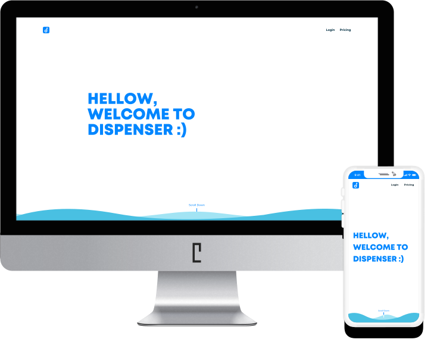

Dispenser
제작한 웹 / 앱을 특정인에게 배포하여 테스터 및 오류 리포트를 받을 수 있는 웹 서비스
제작한 웹 / 앱을 특정인에게 배포하여 테스터 및 오류 리포트를 받을 수 있는 웹 서비스
웹 / 앱을 공유하는 서비스는 물을 나눠준다는 의미로써의 Water dispenser인 수도꼭지를 착안하여 로고를 제작하였습니다. 정수기가 물을 담고 있듯이 Dispenser는 정보를 담고 있는 서비스로써 키 컬러를 파란색으로 선택하였습니다. 또한 정보 전달이 잘 될 수 있도록 맑은 물의 느낌을 줄 수 있는 회색톤의 그라데이션을 사용하여 깔끔하게 디자인하였습니다.
0086FF
74E1D1
A3D3FF
002D40
ED6A72
mont heavy demo
Montserrat
Nanum Barun Gothic
모바일부터 피씨까지 다양한 기기로 Dispenser 서비스를 이용할 수 있도록 구축했습니다. 모바일과 피씨에 맞는 디자인으로 여러 기기로 이용해 보세요!
버튼 하나만 클릭하면 웹 사이트로 이동하거나 앱을 다운로드할 수 있습니다. 앱의 경우, 모바일에서 파일을 다운로드하면 바로 자동 설치가 됩니다.
웹 / 앱의 관련된 오류 리포트를 쉽게 받아볼 수 있는데 오류 처리 상태를 같이 표시하고 있어 진행사항을 확인할 수 있습니다. 또한 댓글 형태로 오류 리포트를 작성할 수 있기 때문에 처리 진행상태를 보다 자세하게 상황을 작성할 수 있습니다.